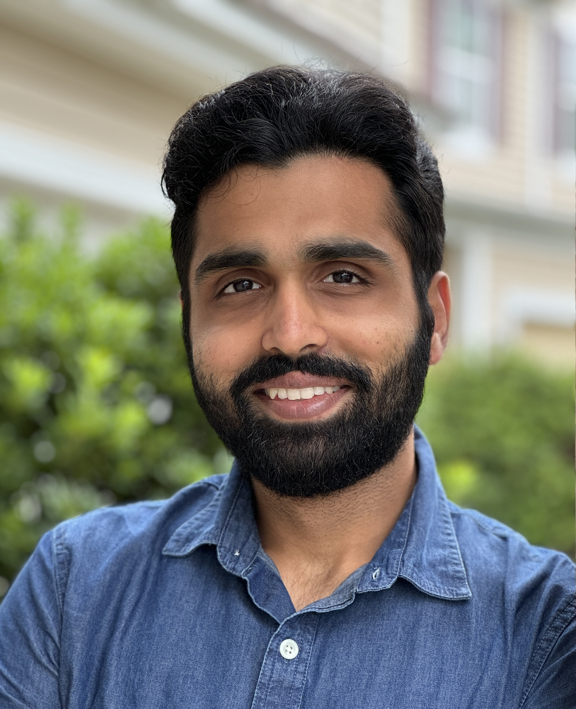
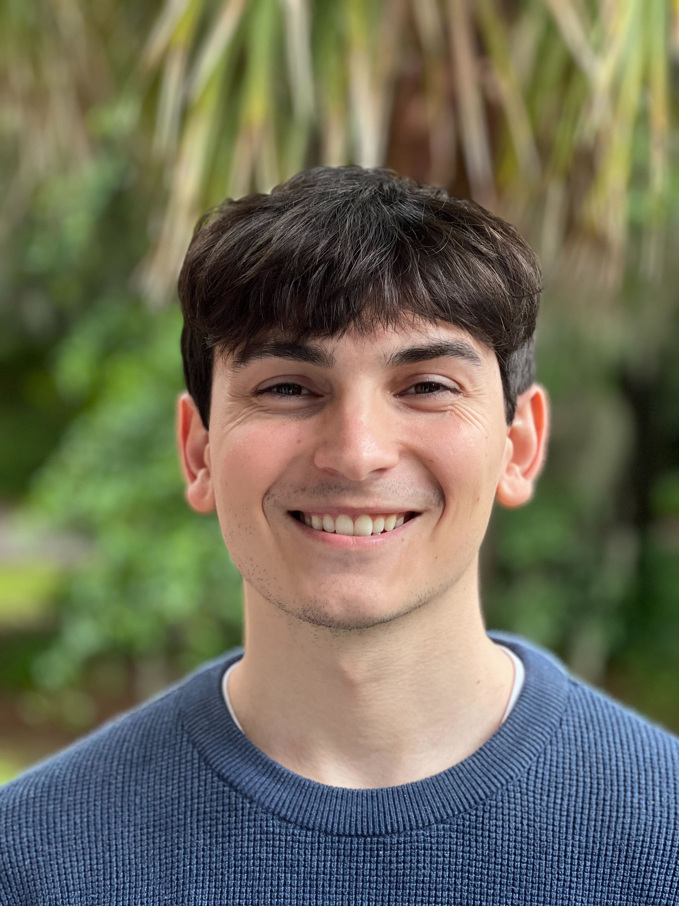
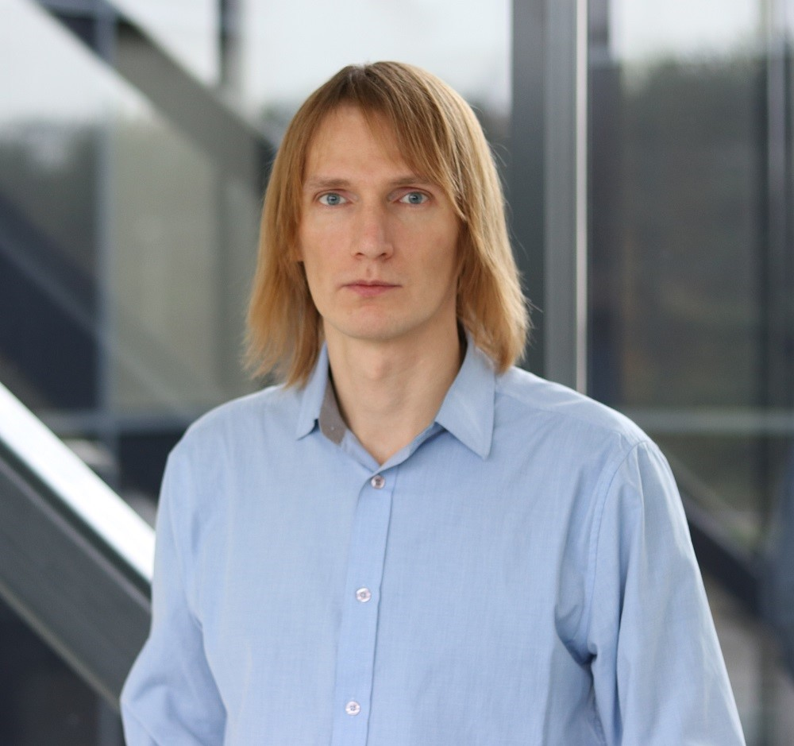

Faculty

biplav.s@sc.edu
Research Interests: Automated Planning, Chatbots, Trust Rating, Neuro-Symbolic AI
Domains: Finance, Health, Elections, Water
Ph.D. Students

kausik@email.sc.edu
Dissertation - Rating AI Models for Robustness through a Causal Lens
Research Interests: Data Analysis, Trust Rating
Domains: Finance

bharath@email.sc.edu
Research Interests: Automated Planning, Chatbots, Neuro-Symbolic AI
Domains: Power IoT, Elections

vishalp@mailbox.sc.edu
Dissertation - Generalized Planning Using Language Models and Its Applications
Research Interests: Automated Planning, Chatbots, Neuro-Symbolic AI
Domains: Elections

Graduated: M.S., May 2023. PhD (2025-)
spaladi@email.sc.edu
Research Interests: Data Analysis, Recommender Systems
Masters Students

Nitin
Gupta
Graduated: B.S., May 2025. MS (2025-)
niting@email.sc.edu
Research Interests: Chatbots, Neuro-Symbolic AI
Domains: Elections

John
Aydin
Graduated: B.S., May 2025. MS (2025-)
jaaydin@email.sc.edu
Research Interests: Chatbots, Neuro-Symbolic AI
Graduated: B.S., May 2025. MS (2025-)
niting@email.sc.edu
Research Interests: Chatbots, Neuro-Symbolic AI
Domains: Elections
Graduated: B.S., May 2025. MS (2025-)
jaaydin@email.sc.edu
Research Interests: Chatbots, Neuro-Symbolic AI
Alumni

Graduated: PhD, May 2025. Now at Adobe.
Dissertation - Building Trustable Methods for Group Recommendations ... (2025)
Research Interests: Recommender Systems, Trust Rating, Neuro-Symbolic AI

Graduated: B.S., May 2025. Now at Textron.
sej15@email.sc.edu
Research Interests: Trust Rating, Chatbots
Domains: Elections
Graduated: B.S., May 2025. Now MS at U. Michigan.
vnagpal@email.sc.edu
Research Interests: Recommender Systems, Chatbots, Neuro-Symbolic AI
Domains: Public Health, Water
Associated Members

Tarmo
Koppel
Visiting Fullbright Scholar(2022-2023)
tarmo.koppel@taltech.ee
Research Interests: Trust Rating
Domains: Elections Finance

Sai
Krishna Revanth Vuruma
(2023-2024)
svuruma@email.sc.edu
Research Interests: Trust Rating
Domains: Finance
Visiting Fullbright Scholar(2022-2023)
tarmo.koppel@taltech.ee
Research Interests: Trust Rating
Domains: Elections Finance
(2023-2024)
svuruma@email.sc.edu
Research Interests: Trust Rating
Domains: Finance